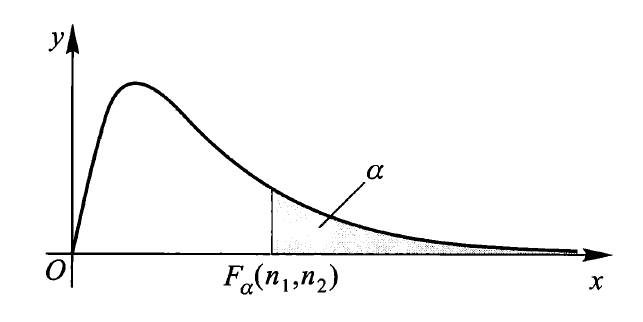
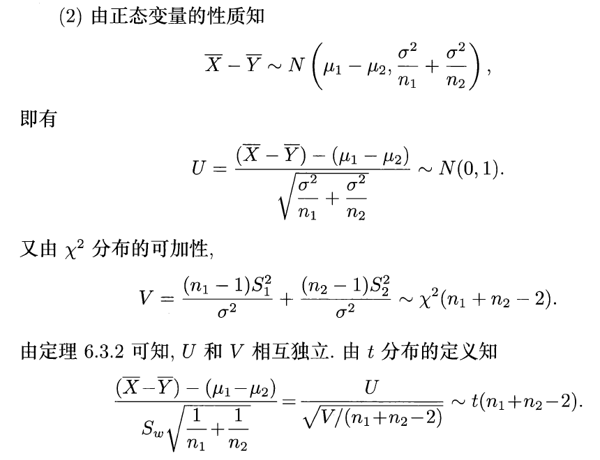

第 6 章 统计量与抽样分布⚓︎
约 1934 个字 预计阅读时间 10 分钟
随机样本与统计量⚓︎
数理统计中涉及到的基本概念：
- 总体：研究对象的全体
- 个体：总体中的每个成员
- 总体容量：总体包含的个体数量
- 有限总体：容量有限的总体
- 无限总体：容量无限的总体
- 对总体的研究，往往仅限于研究对象的一个或几个数量指标
-
可以将指标 \(X\) 看作一个随机变量，或者就把 \(X\) 看作总体（之后不再区分总体和指标了）
- 若 \(X\) 分布函数为 \(F(\cdot)\)，则也称 \(F(\cdot)\) 为总体
- 若关心总体的多个指标，可以用随机向量 \((X_1, X_2, \dots, X_d)\) 来表示
-
数据收集方法：
- 试验
- 抽样调查
- 样本：从总体中抽取的部分个体；样本容量：被抽取的个体数量
- 样本值（或观测值
） ：对样本 \(X_1, X_2, \dots, X_n\) 这 \(n\) 个随机样本进行观测得到的一组实数 \(x_1, x_2, \dots, x_n\) - 简单随机样本 / 独立同分布 (iid.) 样本：满足下列性质的来自总体 \(X\)（它具有分布函数 \(F(\cdot)\)）的随机样本 \(X_1, X_2, \dots, X_n\)
- 独立性：\(X_1, X_2, \dots, X_n\) 是相互独立的随机变量
- 代表性：每一 \(X_i\) 与总体 \(X\) 有相同的分布函数
- 采用有放回抽样得到的样本是简单随机样本；而采用无放回抽样得到的样本不是简单随机样本，但如果是在无限总体或总体容量的情况下，此种抽样方法得到的样本近似为简单随机样本
- 若无特殊说明，之后提到的「样本」均指简单随机样本
- 样本的联合分布函数：\(F_n(x_1, x_2, \dots, x_n) = \prod\limits_{i=1}^n F(x_i)\)
- 若总体具有连续型分布，其密度函数为 \(f(x)\)，那么样本的联合密度函数为：\(f_n(x_1, x_2, \dots, x_n) = \prod\limits_{i=1}^n f(x_i)\)
-
统计量：设 \(X_1, X_2, \dots, X_n\) 是来自总体 \(X\) 的一个样本，\(g(X_1, X_2, \dots, X_n)\) 是样本 \(X_1, X_2, \dots, X_n\) 的函数，若 \(g\) 不含未知参数，则称 \(g(X_1, X_2, \dots, X_n)\) 是一统计量。常用的统计量有：
- 样本均值：\(\overline{X} = \dfrac{1}{n} \sum\limits_{i=1}^n X_i\)
- 样本方差：\(S^2 = \dfrac{1}{n-1} \sum\limits_{i=1}^n (X_i - \overline{X})^2 = \dfrac{1}{n - 1}(\sum\limits_{i=1}^n X_i^2 - n\overline{X}^2)\)
- 样本标准差：\(S = \sqrt{S^2} = \sqrt{\dfrac{1}{n-1} \sum\limits_{i=1}^n (X_i - \overline{X})^2}\)
- 样本 \(k\) 阶（原点）矩：\(A_k = \dfrac{1}{n}\sum\limits_{i=1}^n X_i^k, k = 1, 2, \dots\)
- 样本 \(k\) 阶中心矩：\(B_k = \dfrac{1}{n} \sum\limits_{i=1}^n(X_i - \overline{X})^k, k = 2, 3, \dots\)
说明
- 一般地，用样本均值 \(\overline{X}\) 作为总体均值 \(\mu\) 的估计，用样本方差 \(S^2\) 作为总体方差 \(\sigma^2\) 的估计，用样本原点矩 \(A_k\)（样本中心矩 \(B_k\)）作为总体原点矩 \(\mu_k\)（总体中心矩 \(\upsilon_k\)）的估计
- 总体方差的估计可用 \(S^2\) 或 \(B_2\)，区别在于前者是无偏估计
- 总体的任一个未知参数可以有多个不同的估计，因此参数估计不唯一
- 假设 \(X_1, X_2, \dots, X_n\) 是一个从总体 \(X\) 中抽取的简单随机样本，\(\mu_k = E(X^k)(k = 1, 2, \dots)\) 存在，由辛钦大数定律可知：
\[ A_k = \dfrac{1}{n} \sum\limits_{i=1}^n X_i^k \stackrel{P}{\longrightarrow} \mu_k, n \rightarrow +\infty \]
几类重要的抽样分布⚓︎
抽样分布：统计量的分布
\(\chi^2\) 分布⚓︎
设 \(X_1, X_2, \dots, X_n\) 为独立同分布的随机变量，且都服从标准正态分布 \(N(0, 1)\)，记：
称 \(Y\) 服从自由度为 \(n\) 的 \(\chi^2\) 分布，记作 \(Y \sim \chi^2(n)\)。密度函数为：
下图展示了不同 \(n\) 值下的密度函数：
\(\chi^2\) 分布的性质：
- 分布可加性：设 \(Y_1 \sim \chi^2(m), Y_2 \sim \chi^2(n), m, n \ge 1\)，且 \(Y_1 + Y_2 \sim \chi^2(m + n)\)
- 期望和方差：设 \(Y \sim \chi^2(n)\)，则 \(E(Y) = n, Var(Y) = 2n\)
- 分位数：对于给定的正数 \(\alpha, 0 < \alpha < 1\)，称满足条件 \(P(\chi^2 > \chi_{\alpha}^2(n)) = \int_{\chi_{\alpha}^2(n)}^{+\infty}f_{\chi^2}(x) \text{d}x = \alpha\) 的 \(\chi_{\alpha}^2(n)\) 为 \(\chi^2(n)\) 分布的上（侧）\(\alpha\) 分位数
\(\chi^2\) 分布表
\(t\) 分布⚓︎
设 \(X \sim N(0, 1), Y \sim \chi^2(n)\)，且 \(X, Y\) 相互独立，则称随机变量 \(t = \dfrac{X}{\sqrt{\frac{Y}{n}}}\) 服从自由度为 \(n\) 的 \(t\) 分布（又称为学生氏分布
密度曲线函数如图所示：
\(t\) 分布的性质：
- 密度函数 \(f_t(x)\) 是偶函数，关于 \(y\) 轴对称
- 由密度函数的对称性知：\(t_{1 - \alpha}(n) = -t_{\alpha}(n)\)
- 由 \(t\) 分布的密度函数可以得到：\(\lim\limits_{n \rightarrow +\infty} f_t(x) = \dfrac{1}{\sqrt{2 \pi}}e^{\frac{x^2}{2}}\)，即当 \(n\) 足够大时，\(t\) 分布近似于标准正态分布 \(N(0, 1)\)
- 分位数：对于给定的正数 \(\alpha, 0 < \alpha < 1\)，称满足条件 \(P(t > t_{\alpha}(n)) = \int_{t_{\alpha}(n)}^{+\infty}f_{t}(x) \text{d}x = \alpha\) 的 \(t_{\alpha}(n)\) 为 \(t(n)\) 分布的上（侧）\(\alpha\) 分位数
\(t\) 分布表
\(F\) 分布⚓︎
设 \(U \sim \chi^2(n_1), V \sim \chi^2(n_2)\)，且 \(U\) 与 \(V\) 相互独立，则称随机变量 \(F = \dfrac{U / n_1}{V / n_2}\) 服从第一自由度为 \(n_1\)，第二自由度为 \(n_2\) 的 \(F\) 分布，记为 \(F \sim F(n_1, n_2)\)。密度函数为：
密度函数曲线如图所示：
\(F\) 分布的性质：
- 若 \(F \sim F(n_1, n_2)\)，则 \(\dfrac{1}{F} \sim F(n_2, n_1)\)
- 若 \(X \sim t(n)\)，则 \(X^2 \sim F(1, n)\)
-
分位数：对于给定的正数 \(\alpha, 0 < \alpha < 1\)，称满足条件：
\[ P(F > F_{\alpha}(n_1, n_2)) = \int_{F_\alpha(n_1, n_2)}^{+\infty} f_F(x) \text{d}x = \alpha \]的 \(F_\alpha(n_1, n_2)\) 为 \(F(n_1, n_2)\) 分布的上（侧）\(\alpha\) 分位数，如图所示：
- \(F\) 分布分位数满足如下关系式：\(F_{1 - \alpha}(n_1, n_2) = \dfrac{1}{F_\alpha(n_2, n_1)}\)
\(F\) 分布表

正态总体下的抽样分布⚓︎
单个正态总体⚓︎
设 \(X_1, X_2, \dots, X_n\) 为来自正态总体 \(N(\mu, \sigma^2)\) 的简单随机样本，\(\overline{X}\) 是样本均值，\(S^2\) 是样本方差，则有：
-
\(\overline{X} \sim N(\mu, \dfrac{\sigma^2}{n})\)，即 \(E(\overline{X}) = \mu, Var(\overline{X}) = \dfrac{\sigma^2}{n}\)
- \(\dfrac{\overline{X} - \mu}{\sigma / \sqrt{n}} \sim N(0, 1)\)
-
\(\dfrac{(n - 1)S^2}{\sigma^2} \sim \chi^2(n - 1)\)
- 可以看出，\(\dfrac{S}{\sigma} \sim N(0, 1)\)
-
\(\overline{X}\) 与 \(S^2\) 相互独立
- \(\dfrac{\overline{X} - \mu}{S / \sqrt{n}} \sim t(n - 1)\)（可由第 1、2 条性质推得）
两个正态总体⚓︎
设 \(X_1, X_2, \dots, X_{n_1}\) 和 \(Y_1, Y_2, \dots, Y_{n_2}\) 分别为来自正态总体 \(N(\mu_1, \sigma_1^2)\) 和 \(N(\mu_2, \sigma_2^2)\) 的两个相互独立的简单随机样本。记 \(\overline{X}, \overline{Y}\) 分别是两个样本的样本均值，\(S_1^2, S_2^2\) 分别是两个样本的样本方差，则有：
- \(\dfrac{S_1^2 / \sigma_1^2}{S_2^2 / \sigma_2^2} \sim F(n_1 - 1, n_2 - 1)\)
-
当 \(\sigma_1^2 = \sigma_2^2 = \sigma^2\) 时，
\[ \dfrac{(\overline{X} - \overline{Y}) - (\mu_1 - \mu_2)}{S_w \sqrt{\frac{1}{n_1} + \frac{1}{n_2}}} \sim t(n_1 + n_2 - 2) \]其中，\(S_w^2 = \dfrac{(n_1 - 1)S_1^2 + (n_2 - 1)S_2^2}{n_1 + n_2 - 2}, S_w = \sqrt{S_w^2}\)
证明

评论区